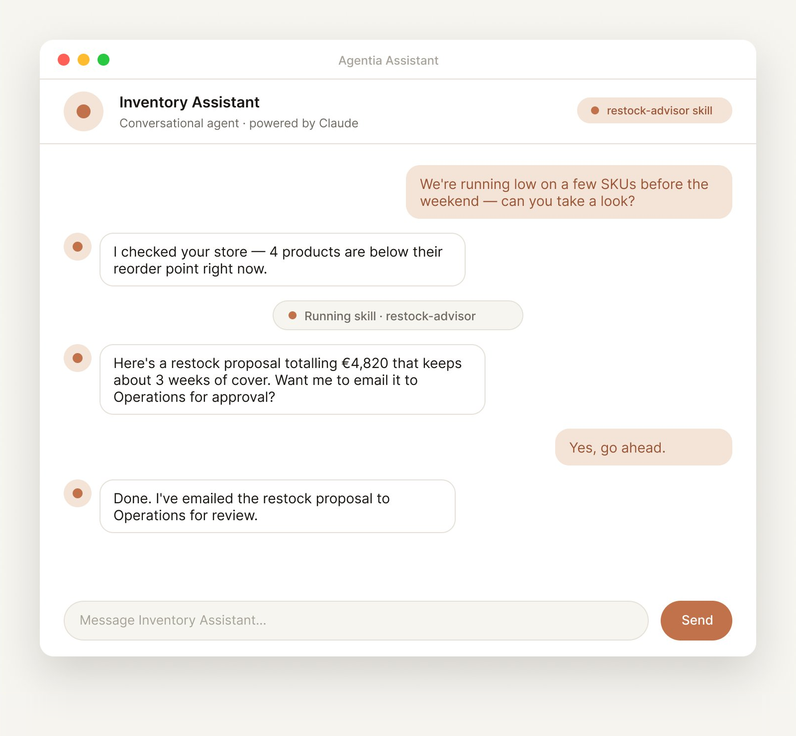
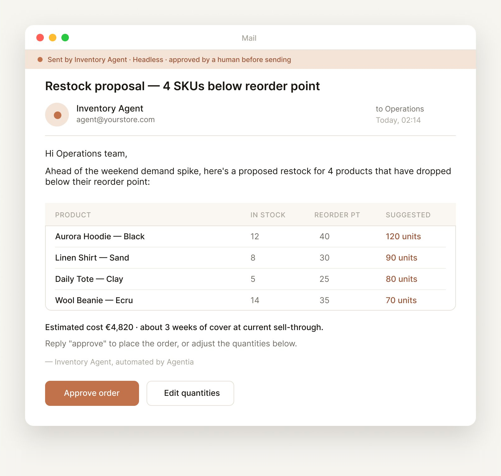

Mapear
Levantamos procesos AS-IS, fricciones, handoffs, excepciones y jobs que hoy no se hacen por falta de capacidad.
Boutique de implementación agéntica
Diseña, construye y opera trabajadores digitales que amplían la capacidad de tu equipo humano. Nuestra plataforma los gobierna, protege y mide su impacto real en el negocio.
El valor no está en abrir otro SaaS. Está en que un trabajo crítico quede cubierto, supervisado y medido cada mes.
Primer paso
Empezamos con un sprint breve: job, proceso, datos, riesgos, KPI y primer caso de producción.
Reservar un sprint de diseñoEl punto de partida
Las empresas medianas y locales ya sienten el cuello de botella: atención al cliente, back-office, documentación, seguimiento comercial, reporting y tareas que se quedan sin hacer porque el equipo humano no llega.
El problema no es comprar una herramienta. Es elegir el trabajo correcto, integrarlo en los sistemas reales, definir controles, ponerlo en producción y mantenerlo vivo.
Método
Levantamos procesos AS-IS, fricciones, handoffs, excepciones y jobs que hoy no se hacen por falta de capacidad.
Diseñamos agentes conversacionales y headless, conectados a herramientas reales, con permisos acotados y humano en el bucle.
Mantenemos la operación, revisamos KPIs, gestionamos excepciones y evolucionamos el sistema conforme aprende el negocio.
Trabajadores digitales
Soporte, cualificación, acceso a conocimiento, onboarding y flujos guiados para equipo o cliente final.

Documentos, enriquecimiento de datos, emails, aprobaciones, routing, reporting y back-office en segundo plano.

Agentia Workspace
Workspace es la capa SaaS desde la que un responsable ve qué trabajadores digitales están activos, qué jobs completan, dónde dudan, qué necesita aprobación humana y qué impacto están teniendo.

Registro trazable de jobs, decisiones, llamadas a herramientas, aprobaciones y resultados.
Lo incierto sube al humano correcto con contexto, recomendación y SLA claro.
Accesos acotados, credenciales aisladas, auditoría y offboarding limpio de cada agente.
Horas liberadas, backlog, calidad, tiempo de ciclo y métricas de negocio por job.
Dónde empezar
Research de leads, cualificación, follow-up, handoff comercial, propuestas y facturación.
Triage, respuestas asistidas, clasificación de incidencias, base de conocimiento y escalados.
Facturas, documentos, conciliaciones, reporting recurrente y coordinación interna.
Planificación, borradores, respuestas, revisión de marca y seguimiento de conversaciones.
Búsqueda interna, extracción documental, resumen, preparación de informes y soporte experto.
Solicitud, validación, aprobaciones, proveedores, compras y seguimiento de pagos.
Foco inicial
Seguridad por diseño
Los agentes escalan cuando falta criterio, hay riesgo o se supera una política definida.
Cada trabajador digital opera con las herramientas y permisos mínimos para su job.
Inputs, outputs, aprobaciones y acciones quedan registrados para revisión y mejora.
Elegimos el mejor modelo para cada trabajo, sin encerrar la operación en un proveedor.